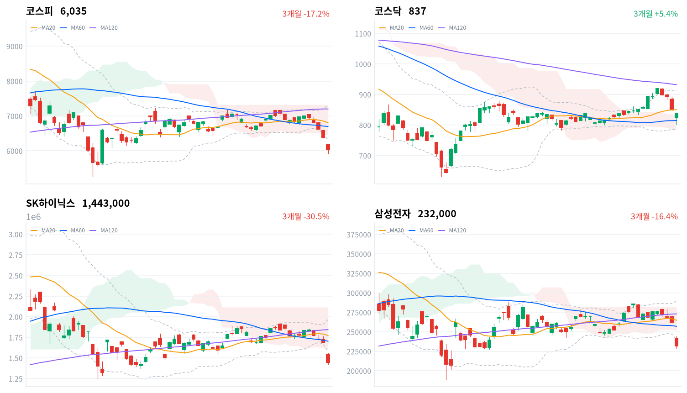

중국 CXMT의 서버 D램 출시 예고에 삼성전자·SK하이닉스가 무너지며 코스피는 장중 6,000선을 내준 뒤 6,035에서 끝났다. 같은 소식을 받은 마이크론과 대만가권보다 한국 메모리가 훨씬 크게 내렸고, 코스닥은 덜 밀렸다.
우리는 이 낙폭 차이를 경쟁력 재평가보다 자사주 매입 종료와 외국인 대량 매도가 겹친 수급 해소로 본다. 10월 16일 마감까지 SK하이닉스가 마이크론보다 강하게 되돌리는지가 이 판단을 가른다.
경향신문에 따르면 CXMT 사장은 10월 12일 상하이 행사에서 연말까지 4F² 구조의 서버용 DDR5를 내놓겠다고 밝혔다. 그 뒤 처음 열린 한국 장에서 코스피는 5.46% 내린 6,035로 마감했고, 장중에는 매도 사이드카까지 발동됐다. 같은 소식을 먼저 받은 미국 10월 12일 세션에서 마이크론은 3.88% 내렸는데, SK하이닉스와 삼성전자는 그보다 훨씬 크게 내렸다. 외국인이 코스피에서 4조5,782억원을 순매도하자(전일 2조103억원 순매도, 당일 잠정) 개인과 기관이 그 물량을 받아 냈다. 메모리 비중이 낮은 코스닥은 1.43% 내리는 데 그쳤다.
채권시장은 오늘 위험 회피를 값매겼다. 국고채 3년물 금리가 6.4bp 내리는 동안 회사채 AA- 3년물은 4.6bp만 내렸다. 그래서 신용 금리차가 69.9bp로 1.8bp 넓어졌고, 최근 2년(531거래일) 가운데 이보다 넓었던 날이 16일뿐이다. 언론은 메모리 급락을 CXMT의 기술 추격 공포로 묶지만, 주가가 경쟁 소식을 얼마나 반영했는지 잴 시장 지표는 없다. 우리가 다르게 보는 곳은 한국과 미국 메모리의 낙폭 차이다. 경쟁 소식은 마이크론도 함께 받았고, 한국에만 있는 것은 자사주 매입 종료와 외국인 대량 매도다.
한국 메모리가 마이크론보다 더 내린 몫은 경쟁력 재평가보다 수급 해소로 판단한다. CXMT는 사양과 출시일을 공개하지 않았고, 글로벌이코노믹은 업계가 서버 고객 인증과 양산 수율까지 시간이 걸린다고 본다고 전했다. 반면 머니투데이와 뉴스웍스는 그동안 두 종목을 받치던 자사주 매입이 끝나는 수순이라고 보도했다. 꾸준히 사 주던 쪽이 빠지는 시점에 외국인 매도가 몰리면 가격은 정보보다 크게 움직인다. 트렌드포스 집계로 CXMT의 D램 매출 점유율은 1분기 7.6%에서 2분기 9.5%로 올랐고, 그 위에 서버 D램까지 따라온다면 D램 비중이 높은 한국 두 회사가 가장 크게 다칠 수 있다. 그렇다면 수급이 진정된 뒤에도 한국 메모리는 마이크론보다 약해야 한다. 두 설명은 10월 14일부터 16일까지의 세션에서 갈린다. 10월 16일 마감 SK하이닉스 종가의 10월 13일 종가(1,443,000원) 대비 변화율이 미국 10월 13~15일 세션 마이크론 누적 변화율(10월 12일 종가 989.04달러 기준)을 3%포인트 넘게 웃돌고, 10월 14일부터 16일까지 외국인 코스피 순매도가 1조원 미만(순매수 포함)인 세션이 하루 이상 있으면 수급 해소 해석이 지지된다. 반대로 그만큼 넘게 밑돌면 우리 판단은 약해지고 경쟁력 재평가 쪽으로 무게를 옮긴다.
오늘은 지수 낙폭 자체보다 한국 메모리와 마이크론의 낙폭 차이에 무게를 둔다. 지수 하락의 대부분이 두 종목에서 나왔고, 그 차이가 되돌려지는지가 다음 며칠의 방향을 정한다. 새로 제안할 상품은 없다. 해외주식 펀드가 보는 반도체 업종에서 한국 메모리의 급락은 아시아 시간의 반응일 뿐이고, 미국 반도체 업종의 판단을 바꾸려면 마이크론과 미국 반도체주의 다음 세션 반응을 봐야 한다. 기다리는 것은 10월 14일 21:30(한국시간)에 나오는 미국 9월 소비자물가, 10월 15일 앤트로픽 투자자의 날, 그리고 10월 16일 마감까지의 SK하이닉스 대 마이크론 상대 흐름과 외국인 순매도 규모다. 회사 쪽 답은 10월 27일 SK하이닉스 3분기 실적과 주주환원 발표에서 나온다.
코스피가 오늘 장중 저점이자 20일 저점인 5,911 아래로 마감하면 수급 해소 해석을 철회한다. 매도 사이드카까지 간 매수 공백이 지나간 뒤에도 지수가 새 저점을 쓴다면, 오늘 매도는 한 번의 수급 사건이 아니라 메모리 이익 전망을 다시 매기는 과정으로 본다.
10월 12일 판단은 유효하다. 코스피 종가가 그날 정한 반증선인 볼린저 밴드 하단(6,502)에 한참 못 미쳐, 미국 메모리 전이 위에 한국 고유의 위험 회피가 얹혔다는 해석은 그대로 둔다. 기다린 조건인 「직전 미국장에서 마이크론이 1% 넘게 오른 세션」은 오지 않았고, 마이크론이 내린 날이라 오늘은 미국 전이와 국내 요인을 가르지 못한다. 다만 잘못 짚은 부분이 있다. 10월 12일에는 국내 위험 회피의 증거로 코스닥과 업종 전반의 하락을 들었지만, 오늘은 코스닥이 덜 내리고 매도가 메모리·기판·전력기기에 몰렸다. 그래서 국내 요인의 중심을 업종 전반에서 메모리 대형주의 수급으로 옮겨 해석을 수정한다. 미국 9월 소비자물가와 SK하이닉스 실적은 아직 오지 않았다.
직전 미국 10월 12일 세션은 지수보다 메모리가 약했다. S&P500은 0.06%, 나스닥은 0.44% 내리고 다우는 0.38% 올라 지수는 크게 움직이지 않았다. 반면 메모리·저장장치주는 함께 밀렸다(마이크론 -3.88%, 웨스턴디지털 -2.60%, 시게이트 -3.80%). 오늘 아시아는 메모리 노출에 따라 갈렸다. 닛케이(-1.82%)와 대만가권(-1.95%)은 내리고 항셍(+0.30%)과 상해종합(+0.10%)은 올라 네 지수 평균은 0.84% 내렸는데, 코스피는 이보다 4.62%포인트 더 내렸다. 매일경제는 대만이 파운드리 중심이라 메모리 경쟁 우려를 덜 받았다고 짚었다.
코스피는 전일 종가(6,384)보다 낮은 6,186에서 출발했고, 시가 바로 위의 6,198이 하루 고가였다. 밤사이 미국 메모리 하락과 CXMT 소식이 시가에 먼저 반영된 뒤 지수는 한 번도 위로 올라서지 못했다. 한국 정규장 동안 미국 선물은 거의 움직이지 않았다(S&P 선물 +0.06%, 나스닥 선물 -0.33%). 장중 낙폭을 키운 것은 밖의 가격이 아니라 국내 매도였다.
코스피는 하루 범위의 아래쪽 절반에서 끝났지만 장중에 내준 6,000선은 되찾고 마감했다. 코스닥은 하루 고가(839.94) 바로 아래인 837.03에서 끝나 장 막판까지 낙폭을 줄였다. 원/달러는 한국장 시간대에 오전 저점 1,334원에서 오후 고점 1,346원까지 올라 1,343원에서 마지막으로 관측됐다. 외국인이 주식을 대량으로 판 날 원화가 약해진 것으로, 원화가 강했던 10월 12일과는 방향이 달랐다.
CXMT 소식과 자사주 매입 종료가 메모리 대형주를 누르고, 외국인 매도가 그 하락을 지수 하락으로 키운 날이다. 기판·부품주와 반도체 장비주가 메모리를 따라 내렸고, 전력기기주는 전일 미국 전력설비주 약세를 따라갔다. 오른 쪽은 LG에너지솔루션처럼 메모리와 거리가 먼 곳이었다. 시간외 거래는 자료가 없어 마감 뒤 매도가 이어졌는지는 가리지 못한다.
코스피는 CXMT 소식에 메모리 대형주가 무너지며 6,035로 마감했다. 장중 저점 5,911이 그대로 20일 저점이 됐고, 종가는 볼린저 밴드 하단(6,314)과 일목 구름 하단(6,471)을 모두 밑돈다. 코스닥은 1.43% 내린 837.03으로 끝나 20일선(850) 바로 아래, 일목 구름 위에 남았다. 10월 12일에는 코스닥이 더 내렸지만 오늘은 코스피가 네 배 가까이 더 내렸다.
| 지수 | 종가 | 등락률 | 시가 | 고가 | 저가 | 전일 종가 |
|---|---|---|---|---|---|---|
| 코스피 | 6,035.35 | -5.46% | 6,186.08 | 6,198.46 | 5,911.11 | 6,384.24 |
| 코스닥 | 837.03 | -1.43% | 823.69 | 839.94 | 802.91 | 849.19 |
장중 경로에서 볼 것은 오후의 되돌림이다. 코스피는 오전 내내 밀려 정오 무렵 저점권에 머물렀다가, 오후 들어 14:30에 6,034까지 반등했고, 15:00에 5,999로 잠시 밀린 뒤 다시 올라 마감했다. 코스닥은 오전 11시 808까지 밀린 뒤 오후에 대체로 올라 하루 고가 근처에서 끝났다. 마감 직전까지 매도가 이어진 10월 12일과 달리 저가 매수가 들어온 셈이다. 투자자별 장중 흐름은 자료가 없어 오후 반등을 산 쪽이 누구인지는 가리지 못한다.

코스피·코스닥·SK하이닉스·삼성전자 3개월 일봉에 이동평균(20·60·120)·볼린저밴드·일목균형표 구름대를 겹쳐 그렸다. 상승 캔들은 녹색, 하락 캔들은 적색이다.
코스피는 세 이동평균과 일목 구름 아래, 볼린저 밴드 하단 밖에서 마감했다. 밴드 하단(6,314)을 되찾으면 구름 하단(6,471)이 다음 저항이고, 20일 저점(5,911)을 내주면 종가 10% 안에는 계산된 지지선이 없다.
코스닥은 20일선 바로 아래, 일목 구름 위에서 마감해 추세의 자리가 코스피보다 높다. 20일선(850)을 되찾으면 전환선(862)이 다음 저항이고, 구름 상단(831)을 내주면 60일선(815)이 다음 지지선이다.
SK하이닉스는 세 이동평균과 일목 구름 아래, 볼린저 밴드 하단 밖에서 마감했다. 밴드 하단(158만원)을 되찾으면 밴드 안으로 돌아오고, 20일 저점(142만5천원)을 내주면 그 아래 가까이에는 계산된 지지선이 없다.
삼성전자는 세 이동평균과 일목 구름 아래, 볼린저 밴드 하단 밖에서 마감했다. 밴드 하단(24만원)을 되찾으면 구름 하단(25만2천원)이 다음 저항이고, 20일 저점(22만8천원)을 내주면 그 아래 가까이에는 계산된 지지선이 없다.
위 레벨은 이동평균·볼린저밴드·일목균형표와 스윙 고저를 기계적으로 계산한 값이며 투자 권유가 아니다.
| 주체 | 순매수(억원) |
|---|---|
| 개인 | +22,952 |
| 외국인 | -45,782 |
| 기관 | +16,842 |
| 주체 | 순매수(억원) |
|---|---|
| 개인 | -1,913 |
| 외국인 | +1,367 |
| 기관 | +438 |
코스피 하락은 외국인 매도가 만들었고, 그 규모는 최근 열 거래일 가운데 가장 컸다. 외국인은 4조5,782억원을 순매도해 전일(2조103억원 순매도)의 두 배를 넘었다(당일 잠정). 전일 값은 10월 12일에 집계한 잠정치에서 갱신된 수치다. 표에 있는 9월 28일 이후 열 거래일 동안 외국인은 하루도 빠짐없이 순매도했다. 언론은 오늘 외국인 매도의 대부분이 삼성전자와 SK하이닉스 두 종목에 몰렸다고 전했다.
받아 낸 쪽은 개인과 기관이다. 개인은 2조2,952억원을 순매수했고(전일 1조4,857억원 순매수), 기관은 1조6,842억원을 순매수해 전일 1,345억원 순매도에서 돌아섰다. 기관 순매수는 열 거래일 가운데 가장 크다. 자사주 매입이라는 꾸준한 매수가 빠지는 국면에서 외국인 매도를 국내 투자자만으로 받아 낸 날이고, 사이드카가 나올 만큼 가격이 밀린 것은 받는 쪽의 가격이 낮아져야 거래가 맞았다는 뜻이다.
코스닥에서는 외국인이 1,367억원(전일 130억원 순매도), 기관이 438억원(전일 2,196억원 순매도)을 순매수했고, 개인은 1,913억원을 팔았다(전일 2,316억원 순매수). 외국인이 코스피 메모리 대형주를 팔면서 코스닥은 사들인 날이라, 오늘 매도가 한국 주식 전반을 줄이는 움직임보다 대형 반도체에 집중됐다는 해석과 맞는다.
장중 누적 수급과 프로그램 매매는 받을 수 있는 자료가 없어 싣지 않는다.
| 순위 | 종목/ETF | 구분 | 거래대금 | 비고 |
|---|---|---|---|---|
| 1 | SK하이닉스 | 개별주 | 7.84조원 | - |
| 2 | 삼성전자 | 개별주 | 5.82조원 | - |
| 3 | 반도체 테마 ETF | 테마·롱 | 3.56조원 | 28종 합산 |
| 4 | 삼성전기 | 개별주 | 1.25조원 | - |
| 5 | KODEX CD금리액티브(합성) | 단기금리·현금성 | 1.23조원 | - |
| 6 | SK스퀘어 | 개별주 | 1.00조원 | - |
| 7 | 삼성전자우 | 개별주 | 0.91조원 | - |
| 8 | SK하이닉스 레버리지 | 단일종목·롱 | 0.58조원 | 5종 합산 |
| 9 | 2차전지 테마 ETF | 테마·롱 | 0.54조원 | 14종 합산 |
| 10 | 금호전기 | 개별주 | 0.41조원 | - |
단위 백만원 원본을 조 단위로 환산했다. 같은 기초자산 ETF는 방향별로, 같은 테마 섹터 ETF는 테마별로 묶고 지수·해외 ETF는 제외했다.
거래는 내린 메모리 대형주와 그 상품에 몰렸다. SK하이닉스(7.84조원)가 삼성전자(5.82조원)를 크게 앞서 1위였고, 반도체 테마 ETF 28종 합산이 3.56조원으로 3위다. 상위 열 줄 가운데 일곱 줄이 반도체와 그 부품·지주·상품이다. 거래대금은 사고판 양을 함께 세므로, 이 쏠림은 메모리 쪽 손바뀜이 컸다는 뜻이지 자금이 어느 방향으로 움직였는지를 말하지 않는다.
8위의 SK하이닉스 단일종목 레버리지 5종 합산(0.58조원)은 모두 롱 상품이고, 상위 열 줄에 인버스 상품은 없다. 투자자별 자료가 없어 급락한 날 이 상품을 누가 사고팔았는지는 가리지 못한다. KODEX CD금리액티브(합성)는 단기금리를 따르는 대기 자금 상품이다.
대표 ETF 기준 섹터 막대에서도 하락의 중심은 반도체(-3.96%)였고, 로봇(-3.18%)이 뒤를 이었다. 반면 2차전지(+1.49%)와 조선(+1.03%)은 올랐다. 반도체 업종 안에서도 일부 장비·소재주는 올랐다. 한국경제는 SK하이닉스를 고객사로 둔 소부장주가 호남 반도체 클러스터 기대로 상승했다고 전했다. 반도체의 한 달 수익률은 +1.38%에 그친다.
네이버 업종 등락률 상위 60개 가운데 오른 업종은 열다섯 개였지만, 오른 업종 대부분에서도 오른 종목은 절반이 안 됐다. 전기제품은 68종목 가운데 26종목, 소프트웨어는 74종목 가운데 26종목만 올랐다. 반대로 은행은 11종목 가운데 1종목, 기계는 105종목 가운데 20종목만 올랐다. 반도체와반도체장비는 이 60개 목록에 들지 못할 만큼 내려, 업종 안에서 몇 종목이 올랐는지 볼 수 없다. 오늘 상승은 몇몇 업종의 일부 종목에 그친 좁은 상승이다.
아래 종목 등락률은 10월 8일 종가 대비 두 거래일(10월 12~13일) 누적이다.
메모리 대형주와 지주·장비주가 지수를 가장 크게 끌어내렸다(삼성전자 -11.45%, SK하이닉스 -14.16%, SK스퀘어 -18.38%, 한미반도체 -14.23%). 파이낸셜뉴스는 CXMT 발표를 하락의 직접 계기로 꼽았고, 머니투데이는 자사주 매입 종료 수순을 함께 들었다. 삼성전자우도 크게 내렸다(-10.15%).
LG에너지솔루션은 지수와 반대로 올랐다(+2.24%). 아주경제는 시가총액 상위 25개 종목 가운데 홀로 오른 이유로 미국 ESS 시장에서 중국산 배터리를 대체할 수주 기대를 들었다.
기아는 자동차 대형주 가운데 올랐다(+1.40%). 확인된 재료 없음.
반도체 기판·부품주가 메모리를 따라 급락했다(삼성전기 -11.84%, LG이노텍 -20.89%, 대덕전자 -6.85%). CBC뉴스는 반도체 기판주의 동반 급락을 반도체 하락에 연동된 움직임으로 전했다. LG이노텍의 두 거래일 낙폭에는 10월 12일 실적 우려로 급락한 몫이 크게 섞여 있다.
전력기기주도 크게 내렸다(LS ELECTRIC -8.34%, 효성중공업 -13.71%, HD현대일렉트릭 -7.59%, 산일전기 -5.17%, 가온전선 -5.41%). 인포스탁데일리는 전일 미국 AI 인프라·전력설비주 약세에 연동됐다고 봤고, 미국 10월 12일 세션에서 GE 버노바(-0.79%)와 버티브(-1.41%)도 내렸다. 재경일보는 LS ELECTRIC에 개별 악재가 확인되지 않았다고 전했다.
묶음 밖에서는 금호전기(+34.98%)가 호남 반도체 클러스터 기대로 급등했다. 에이피알(-23.82%)과 LG전자(-11.22%), 두산에너빌리티(-10.0%)도 크게 내렸지만 확인된 재료는 없다.
주식이 무너진 날 국고채는 강했다. 국고채 3년물 금리는 6.4bp 내린 3.857%, 10년물은 7.7bp 내린 4.229%로 장기물이 조금 더 내렸다. 회사채 AA- 3년물은 4.6bp만 내려 신용 금리차가 넓어졌다. 원/달러는 한국장 시간대에 1,343원에서 마지막으로 관측돼 원화가 약해졌다.
| 지표 | 금리 | 전일比(bp) | 기준일 |
|---|---|---|---|
| 국고채 3년 | 3.857% | -6.4 | 2026-10-13 |
| 국고채 10년 | 4.229% | -7.7 | 2026-10-13 |
| CD 91일 | 3.240% | 0.0 | 2026-10-13 |
| 회사채 AA- 3년 | 4.556% | -4.6 | 2026-10-13 |
| 한국은행 기준금리 | 3.000% | 0.0 | 2026-09 |
ECOS(한국은행) 기준. 기준금리는 9월 기준 값이다.
커브는 거의 그대로였다. 10년물과 3년물의 금리차는 37.2bp로 1.3bp 줄어, 안전자산 수요가 만기 전 구간에 고르게 들어온 모양이다. 신용 쪽은 다르다. 회사채 AA- 3년물과 국고채 3년물의 금리차가 넓어진 것은 국고채 강세가 회사채로 다 번지지 않았다는 뜻이다. 유안타증권은 외국인의 국고채 선물 대규모 순매수를 금리 하락 배경으로 꼽았다(머니투데이).
3년물은 기준금리보다 85.7bp 위에 있고, 이 격차는 최근 2년(531거래일) 가운데 넓은 쪽 21% 안이다. 증권가 일부가 11월 인상을 거론하지만 이 격차에는 정책 경로와 기간프리미엄이 섞여 있다. 미국 국채시장은 10월 12일 쉬었고 미국 10년물은 10월 9일 5.244%가 마지막 값이라, 오늘 한국 금리 하락은 미국 금리의 새 움직임과 잇지 못한다.
| 미국 참조 지수 | 구분 | 관측 | 등락률 | 업종 내 상승 비율 | 기준일 |
|---|---|---|---|---|---|
| 반도체·AI 하드웨어 | 종목 | SK하이닉스 | -14.16% | – | 10/13 |
| 반도체·AI 하드웨어 | 종목 | 삼성전자 | -11.45% | – | 10/13 |
| 반도체·AI 하드웨어 | 지수 | 대만가권 | -1.95% | – | 10/13 |
| 전력망 | 업종 | 전기장비 | -1.61% | 26% | 10/13 |
| 전력망 | 업종 | 전기제품 | +1.49% | 38% | 10/13 |
| 전력망 | 종목 | HD현대일렉트릭 | -7.59% | – | 10/13 |
| 전력망 | 종목 | LS ELECTRIC | -8.34% | – | 10/13 |
| 전력망 | 종목 | 효성중공업 | -13.71% | – | 10/13 |
| 방산 | 종목 | 한화에어로스페이스 | -5.84% | – | 10/13 |
| 방산 | 종목 | LIG디펜스앤에어로스페이스 | -8.28% | – | 10/13 |
| 산업재 | 업종 | 기계 | -1.70% | 19% | 10/13 |
| 산업재 | 업종 | 조선 | -0.36% | 20% | 10/13 |
| 산업재 | 종목 | HD현대중공업 | -4.56% | – | 10/13 |
| 산업재 | 종목 | 한화오션 | -6.81% | – | 10/13 |
| 산업재 | 종목 | 삼성중공업 | -2.65% | – | 10/13 |
| 금속·광업 | 업종 | 철강 | -0.60% | 31% | 10/13 |
| 금속·광업 | 업종 | 비철금속 | -1.18% | 20% | 10/13 |
| 금속·광업 | 종목 | POSCO홀딩스 | -2.45% | – | 10/13 |
| 금융 | 업종 | 은행 | -0.84% | 9% | 10/13 |
| 금융 | 업종 | 증권 | -1.35% | 23% | 10/13 |
| 금융 | 종목 | KB금융 | -0.25% | – | 10/13 |
| 금융 | 종목 | 신한지주 | +0.20% | – | 10/13 |
| 소프트웨어 | 업종 | 소프트웨어 | +0.87% | 35% | 10/13 |
| 소프트웨어 | 업종 | IT서비스 | -1.48% | 30% | 10/13 |
| 소프트웨어 | 종목 | NAVER | -3.16% | – | 10/13 |
| 소프트웨어 | 종목 | 카카오 | -3.10% | – | 10/13 |
| 에너지 | 종목 | SK이노베이션 | -2.55% | – | 10/13 |
| 일본 | 지수 | 닛케이 | -1.82% | – | 10/13 |
| 중국 | 지수 | 항셍 | +0.30% | – | 10/13 |
| 중국 | 지수 | 상해종합 | +0.10% | – | 10/13 |
해외주식 펀드의 원화 환산 조건은 오늘 원화 약세 쪽으로 움직였다. 한국장 시간대 원/달러는 오전 저점 1,334원에서 오후 고점 1,346원까지 올라 1,343원에서 마지막으로 관측됐는데, 서울 외환시장 공식 종가가 아닌 장중 관측값이다. 원화가 약해지면 이미 들고 있는 달러 자산의 원화 환산 가치는 오르고, 새로 달러를 사는 비용은 늘어난다. 대기 자금의 참고 금리 가운데 CD 91일은 그대로였고 국고채 3년물은 6.4bp 내렸다. 단기채로 받을 수 있는 금리가 조금 낮아진 날이다.
반도체·AI 하드웨어에서는 한국 메모리만 크게 무너졌다. 표의 SK하이닉스(-14.16%)와 삼성전자(-11.45%)는 10월 8일 종가 대비 두 거래일 값이고, 같은 날 대만가권은 -1.95%로 훨씬 덜 내렸다. CXMT 소식이 메모리 비중이 큰 한국에 몰려 실린 것으로, 미국 반도체 업종 전체로 번진 신호는 아직 아니다. 전력망은 업종과 대형주가 갈렸다. 전기장비 업종은 -1.61%에 오른 종목 비율 26%로 약했고, LG에너지솔루션이 속한 전기제품 업종은 +1.49%였지만 오른 종목은 38%에 그쳤다. 소프트웨어 업종은 +0.87%로 버텼다. 이 관측은 직전 미국 세션과 공통 뉴스에 대한 반응일 수 있고, 미국장을 앞서 움직인다는 근거는 아직 없다.
CXMT의 연말 서버용 DDR5 출시 예고가 오늘 시장을 움직인 첫 재료다. 한국 D램의 점유율과 가격 결정력이 깎일 수 있다는 우려가 이익 전망을 누르고, 경쟁 우위에 붙어 있던 멀티플을 줄이는 경로다. 피해는 메모리 대형주와 그 기판·장비 공급망(삼성전기·LG이노텍·대덕전자·한미반도체)에 몰렸고, 가격과 수급 모두 이 방향과 맞는다. 상대적으로 이득을 본 업종은 확인되지 않았다. 서울경제는 4F² 제품이 수율과 발열 문제로 2028년 이후에야 상용화될 것이라는 평가를 전해, 당장의 이익 위협과 주가 반응 사이에 거리가 있다. 다음 확인점은 CXMT의 실제 사양·고객 인증 공개이고, 일정은 미확정이다.
머니투데이와 뉴스웍스는 삼성전자·SK하이닉스의 자사주 매입이 끝나는 수순이고, SK하이닉스 매입은 이번 주 마무리될 전망이라고 전했다. 경로는 수급이다. 꾸준히 사던 주체가 빠지면 외국인 매도를 받을 쪽이 개인과 기관만 남고, 오늘처럼 같은 매도에도 가격이 더 크게 밀린다. 피해는 두 대형주와 지수 전체다. 확인은 회사 공시의 매입 완료일과 그 뒤 외국인 순매도 규모에서 하고, SK하이닉스는 10월 27일 실적 발표에서 추가 주주환원 여부를 밝힐 수 있다.
비즈워치는 법원이 두 종목의 효력정지 가처분을 받아들이자 한국거래소는 시가총액 미달로 관리종목에 지정된 코스피 21개·코스닥 42개 종목의 상장폐지 절차를 멈췄다고 전했다. 금융위원회는 저성과 기업 퇴출 방향은 유지하되 법원 판단에 따라 보완할 여지를 남겼다. 경로는 멀티플이다. 퇴출 기준이 바뀌면 소형주의 퇴출 위험 할인이 줄고, 복수 기준이 도입되면 이익을 내는 소형주가 먼저 혜택을 본다. 오늘 해당 종목군의 가격 반응은 자료로 확인하지 못했다. 법원 판단과 금융위 보완안의 일정은 미확정이다.
미국 9월 소비자물가는 10월 14일 21:30(한국시간)에 나온다. 경로는 미국 금리가 할인율을 거쳐 성장주와 반도체의 멀티플, 그리고 원/달러에 닿는 길이다. 결과는 10월 15일 한국 세션에서 확인한다. 한국경제TV는 신현송 한국은행 총재가 12일 국정감사에서 환율의 추가 하락 여지를 언급했다고 전했는데, 오늘 원화는 오히려 약해졌다. 다음 금융통화위원회 날짜는 이번에 확인하지 못했다. 세제·밸류업·부동산 규제에서 오늘 확인된 새 변화는 없다.
오늘 뉴스는 중국발 반도체 충격과 외국인 매도, 채권으로 옮겨 간 자금, 상장 제도를 둘러싼 논란에 몰렸다.
[단독] ‘퇴직연금 개인용 국채’ 압도한 미래에셋證…첫달 점유율 1위서울경제 · 10월 13일
지난달 퇴직연금 계좌를 통한 개인투자용 국채 청약이 허용된 첫 달, 미래에셋증권이 판매 점유율 1위를 차지했다. 9월 퇴직연금 계좌 청약 규모는 전체 1433억 원 가운데 미래에셋증권이 623억 6000만 원으로 약 43.5%를 차지했다. 재정경제부는 9월부터 개인이 보유한 퇴직연금 계좌에서 10년물과 20년물 개인투자용 국채 투자를 허용했으며, 증권사 5곳과 은행 3곳이 관련 상품을 판매하고 있다. 미래에셋증권은 올 6월 증권업계 최초로 연금자산 80조 원을 넘었고, 2024년 6월 상품 출시 때부터 청약과 배정, 중도환매 업무를 맡아 운영 경험을 쌓아 왔다. 전용계좌까지 포함하면 9월 개인투자용 국채 청약 2585억 원 중 미래에셋증권의 비중은 약 69%에 이른다. 기사에 따르면 증시 변동성이 커지면서 정부 보장에 따른 안전성과 만기 전 세금 미부과 등 세제 혜택이 상품 선호를 높인 것으로 보인다. 판매사들은 장기 적립금을 확보하기 위해 유치 경쟁을 본격화하고 있다.
"환율 더 떨어진다"...대세로 떠오른 환헤지ETF한국경제TV · 10월 13일
원·달러 환율이 지난 12일 1,331원까지 떨어져 2년 만에 최저 수준을 기록하면서, 환율 변동을 걸러내는 환헤지형 ETF가 주목받고 있다. 최근 3개월 수익률은 환헤지형이 3%대 플러스, 환노출형이 7%대 마이너스로 격차가 뚜렷했다. 원화 강세에 달러자산 투자 수요도 커져, 올해 2분기 순매수 상위 ETF가 국내 지수 상품 위주였던 것과 달리 현재는 미국 증시 관련 ETF가 1, 2위를 차지했다. 한국투자증권 문다운 연구원은 무역흑자 확대와 성장률 전망 상향을 근거로 환율이 1,300원대 초중반까지 더 내려갈 수 있다며 환헤지 투자 확대를 권했다. 신현송 한국은행 총재도 12일 국정감사에서 환율의 추가 하락 여지를 언급한 바 있다. 다만 환헤지에는 미국과 한국의 금리 차만큼 비용이 들며, 미래에셋자산운용은 3년간 약 5%의 헤지 비용이 발생했다고 밝혀 장기 투자자에게는 부담이 될 수 있다고 전문가들은 조언한다.
금리 정점론 부상…채권, 주식 어느쪽이 웃나머니투데이 · 10월 13일
국고채 10년물 금리가 13일 4.229%로 전일보다 7.7bp 내려 이틀간 16.6bp 하락했고, 미국 국채 10년물 금리도 고점에서 물러섰다. 금리 하락은 채권 수요 회복을 뜻해 주식과 채권이 투자자금을 두고 경쟁하는 구도가 형성됐다. 다만 전날 코스피는 3.65% 하락한 6384.24에 마감했고 이날 장중에도 7% 넘게 급락해 매도 사이드카가 약 두 달 만에 발동하는 등 주식 매수세는 아직 회복되지 않았다. 유안타증권은 외국인의 국채선물 대규모 순매수를 금리 하락 배경으로 꼽았다. 삼성전자의 3분기 잠정 영업이익은 전년 대비 782.5% 늘었지만 주가는 약세를 보였고, AI 인프라 투자 수익성 우려와 정점 통과론이 반도체주에 매도 압력을 주는 것으로 평가된다. 증권가에서는 한국은행이 11월 기준금리를 추가 인상해 최종 3.50%까지 올릴 것이란 관측도 나온다. 유진투자증권은 추세적 하락 전환보다 불확실성이 남아 있다며 주간 변동성에 유의할 것을 권했다.
'시총 미달 상폐 너무 급했나'...정부·여당서 쏟아지는 우려에 금융위 고심비즈워치 · 10월 13일
금융위원회가 시가총액 기준 미달 상장폐지 절차를 두고 법원 제동과 정부·여당의 반대에 직면했다. 한국거래소는 법원이 주연테크와 케이엠제약의 효력정지 가처분 신청을 받아들이자, 시총 미달로 관리종목에 지정된 코스피 21개와 코스닥 42개 종목의 상장폐지 절차를 멈췄다. 금융위는 저성과기업의 신속한 퇴출 방향에는 변함이 없다고 밝히면서도, 향후 법원 판단에 따라 절차를 재개하거나 일부 보완할 수 있다는 여지를 남겼다. 이소영 중소벤처기업부 장관은 시총이라는 단일 기준으로만 판단하면 부당한 결과가 나올 수 있다고 지적했고, 민병덕 민주당 의원은 코스닥 시총 기준이 300억원으로 오르면 314곳이 퇴출 대상에 오른다며 복수 기준 도입을 요구했다. 민 의원실 자료에 따르면 시총 200억원 미만 코스닥 96곳 중 19곳은 2023~2025년 3년 연속 영업이익 흑자를 냈다. 이억원 금융위원장은 시가총액이 최소한의 거래 가능 기준선이라고 맞섰다.
유예냐 강행이냐…코인 과세 향방은데일리안 · 10월 13일
내년 1월 가상자산 소득 과세를 앞두고 업계의 전망이 엇갈린다. 정부가 의견 수렴 입장을 밝혔지만 구체적인 후속 논의가 뚜렷하지 않아 예정대로 시행될 수 있다는 관측이 나오는 반면, 대통령 국정수행 긍정 평가가 35.2%로 2주 연속 하락한 상황에서 투자자 반발을 감수하기 어렵다는 시각도 있다. 이형일 부총리는 지난달 28일 국회에서 세법상 내년 과세가 예정돼 있다고 밝혔으나, 지난 6일 국정감사에서는 시행 여부를 두고 폭넓게 의견을 수렴하겠다고 답해 발언 수위가 누그러졌다는 해석이 나온다. 취득가액 산정과 해외 거래내역 확보 등 준비 과제가 남아 있다는 지적도 있지만, 정부는 과세 시스템이 완비돼 있다며 국세청 고시 계획을 조만간 발표하겠다는 입장이다. 현행 세법상 과세는 내년 1월 1일 이후 발생한 양도·대여 소득부터 적용되며, 시행을 미루려면 법 개정이 필요해 연말 세법 논의가 분수령이 될 전망이다.
"상장 포기" 투자금 도로 뱉었다…중복상장 규제에 마른 기업 자금줄머니투데이 · 10월 13일
중복상장 규제가 시행된 뒤 국내 IPO 시장이 크게 위축됐다. 올해 1월 1일부터 10월 8일까지 신규 상장사는 34곳으로 지난해 같은 기간보다 37% 줄었고, 코스피에는 케이뱅크 한 곳만 입성했다. 공모금액도 1조6546억원으로 지난해의 절반에 못 미쳤다. 물적분할 자회사 상장에 모회사 주주 동의가 요구되고 예비심사 문턱이 높아지면서 HD현대로보틱스 등은 상장을 보류하거나 재검토하게 됐고, LS그룹 에식스솔루션즈는 IPO 계획이 철회됐다. 투자금 회수가 막히자 IPO 헤지펀드 수익률은 최저 -60%까지 떨어졌다. 금융위원회는 주주 동의 의무화 등 제도 개선안을 마련했지만, 일반주주 가치를 훼손하는 거래를 가려낼 심사 기준은 선례가 부족하다. 일본은 친자상장 유지 이유를 설명하도록 하고, 미국과 영국은 공시와 이해상충 관리로 규율한다.
"5500까지 열어 둬야" vs "지금이 매수 기회"…코스피 바닥 논쟁뉴스1 · 10월 13일
코스피가 중국발 반도체 쇼크와 외국인 매도로 장중 급락하면서 증권사들의 4분기 전망치는 최저 5500에서 최고 9000까지 벌어졌다. 이달 코스피는 11.7% 하락해 주요국 증시 상승과 대비되는 흐름을 보였고, 이날 시가총액은 4978조 원으로 약 두 달 반 만에 4000조 원대로 내려앉았다. 키움증권은 200일 이동평균선 이탈을 근거로 전저점 5500까지 하방을 열어둬야 한다고 봤다. 미래에셋증권은 외국인의 현물과 비차익 매도를 개인이 받아내는 구조가 반복되고 있어 추세 회복에 시간이 필요하다고 짚었다. 메리츠증권은 10월 말 실적 시즌 확인 전까지 보수적으로 접근하되 중소형주 중심 대응이 유효하다고 제시했다. 반면 KB증권은 W자 반등의 두 번째 바닥을 찾는 중이라며 5000 중반에서 6000 초반을 매수 구간으로 제시했다. 유안타증권은 RSI가 29까지 떨어져 과매도 구간에 들었고 삼성전자와 SK하이닉스의 선행 PBR이 1배 안팎에 근접했다고 분석했다.
반도체 기둥 쓰러지자 와르르 … 韓증시, 일본·대만 낙폭의 3배매일경제 · 10월 13일
중국 창신메모리(CXMT)가 올해 말 4F² 아키텍처 기반 차세대 서버용 D램 출시를 계획하고 있다는 소식에 13일 코스피는 5.46% 급락한 6035.35에 마감했다. 같은 날 대만 자취엔지수는 1.95%, 일본 닛케이225는 1.82% 하락해 낙폭이 상대적으로 작았다. 7월 이후 코스피는 28.80% 떨어진 반면 자취엔지수는 4.80% 올랐고, 현 정부 출범 이후 누적 상승률도 대만에 역전당했다. 삼성전자와 SK하이닉스의 합산 시가총액이 코스피의 50.06%를 차지해 두 종목 매도가 지수 전체를 끌어내렸다는 분석이다. 대만은 TSMC가 파운드리 중심이라 메모리 경쟁 우려의 영향이 제한적이었고, 일본은 해운·금융 등으로 매수세가 분산됐다. 여기에 중동 긴장으로 뛴 유가와 원화 강세로 인한 외국인 차익실현도 낙폭을 키웠다. 반도체를 대체할 산업군이 부족한 국내 증시 구조가 취약점으로 지목된다.
AI 자금조달 불안 겹쳐 시장 패닉…“반등 모멘텀도 안 보인다”서울경제 · 10월 13일
코스피가 13일 장중 7월 30일 이후 최저 수준까지 밀렸다. 중국 창신메모리(CXMT)의 4F² 서버용 D램 연내 공개 계획에 브로드컴과 인텔 CEO가 AI 투자 자금과 수익성에 의문을 제기하면서 반도체 대형주가 급락했다. 7월 말에도 CXMT 충격으로 하루 만에 10.84% 폭락했다가 MS 실적에 힘입어 17.91% 급반등한 전례가 있다. 이번에는 반도체 투톱의 자사주 매입 종료, 앤트로픽 상장을 앞둔 외국인 자금 이탈, 블랙록의 미국 주식 비중 축소가 겹쳐 뚜렷한 반등 재료가 없다. 4F² 제품은 수율과 발열 문제로 2028년 이후에야 상용화될 전망이어서 당장의 위협은 제한적이라는 평가다.
中 반도체 쇼크에 … 6천피 턱걸이[뉴스&분석]매일경제 · 10월 13일
13일 코스피는 장중 한때 5911.11까지 밀린 끝에 급락 마감했다. 5거래일 연속 하락이었고, 두 달여 만에 매도 사이드카도 발동됐다. 장중 6000선 아래로 내려간 것은 7월 31일 이후 47거래일 만이다. 하락의 직접적 계기는 미국 마이크론 주가 급락과 중국 창신메모리(CXMT)의 차세대 서버용 메모리 출시 계획이었다. CXMT는 4F² 구조를 적용해 연말까지 새 제품을 내놓겠다고 밝혔고, 이로 인해 공급 증가와 가격 경쟁 우려가 반도체 투자심리를 위축시켰다. 여기에 지난달 중순 이후 선진국 장기채 금리가 급등하며 주식 매력이 줄었고, 중동 전쟁으로 생긴 고유가 부담도 겹쳤다. 외국인은 이날 코스피에서 4조5000억원가량을 순매도했으며 올해 들어 순매도 규모는 200조원을 넘었다. 증시 약세로 자금이 채권에 몰리며 국고채 3년물 금리는 3.857%로 내렸다. 증권가에서는 11월 초 미국 중간선거 전까지 뚜렷한 호재 없이 변동성 장세가 이어질 것으로 본다.
호남 반도체팹 수혜주, 이틀 연속 '고공행진'한국경제 · 10월 13일
최태원 SK그룹 회장이 지난 9일 호남권 반도체 클러스터 부지인 광주 군공항을 처음 방문해 "여건이 마련되면 가능한 한 빨리, 최대한 많이 짓겠다"며 투자 속도전을 주문했다. 이를 계기로 호남 건설 인프라 관련주가 연일 강세를 보이고 있다. 13일 유가증권시장에서 레미콘·콘크리트 제조사 서산은 전날에 이어 29.88%까지 올라 가격제한폭에 도달했고, 아스콘·레미콘 공급사 HC보광산업도 이틀 연속 12%대 상승했다. 전남광주 기반 조명업체 금호전기는 3.88% 올랐다. SK하이닉스를 고객사로 둔 반도체 소부장 업체들도 피에스케이홀딩스(7.20%), 티에스이(6.98%), 주성엔지니어링(3.56%) 등이 상승했다. 다만 반도체 착공 시점과 세부 투자 실행안이 아직 확정되지 않은 상황에서 단기 기대감만으로 주가가 과도하게 오르고 있다는 점에서 증권가는 투자에 유의해야 한다고 지적했다.
‘2조원 차’ 벌린 삼성證, 추격하는 한투…퇴직연금 2위 격돌디지털타임스 · 10월 13일
증시 조정으로 은행 예금이 늘고 증권사 투자자예탁금이 줄면서 증권사 퇴직연금 적립금 경쟁이 치열해지고 있다. 금융투자협회와 금융감독원 비교공시에 따르면 2분기 말 증권업계 퇴직연금 적립금은 165조486억원이며, 미래에셋증권이 52조210억원으로 선두를 지키고 있다. 2위 삼성증권은 28조919억원, 3위 한국투자증권은 26조4045억원이다. 지난해 말 3086억원에 그쳤던 두 회사의 격차는 올 상반기 삼성증권이 7조346억원을 늘리는 사이 1조6875억원으로 벌어졌다. 삼성증권은 DC형 적립금의 42.81%를 삼성그룹 계열사가 차지하는 등 계열사 자금을 기반으로 선두권을 지키고 있다. 반면 한국투자증권은 계열사 비중이 0.81%에 그쳐 플랫폼 개편과 행동 유도형 디지털 PB 서비스를 앞세워 30대 중반 신규 고객 선점에 나서고 있다. 한편 DB에서 DC로 전환한 가입자들의 7~8월 단순 기간수익률이 마이너스 10%대로 떨어진 점도 신규 자금 유입을 제약하는 요인으로 꼽힌다.
日장관 "나 지지 안한 지자체 예산 컷"…다카이치 내각 또 스캔들뉴스1 · 10월 13일
일본 농림수산상 야나 가즈오가 자신을 지지하지 않은 지방자치단체의 도로 예산을 대폭 삭감했다는 발언이 드러나 사퇴 압박을 받고 있다. 발언은 지난 5월 24일 도치기현 자민당 지부 모임에서 나왔으며, 주간지가 입수한 녹취록을 통해 알려졌다. 야나 농무상은 13일 중의원 예산위원회에서 감액을 요구한 적이 없다고 부인했고, 야권은 문책결의안 제출을 검토하고 있다. 선거 당시 지지자에게 무료 셔틀버스를 제공했다는 의혹도 선거법 위반 여부를 놓고 주목받고 있다. 이바야시 국토교통상은 예산 삭감 논의 여부를 묻는 질문에 기록이 없다고 답해 논란을 키웠다. 별도로 세키 요시히로 문부과학상이 2024년 국회의원회관에서 불법 정치자금 행사를 열었던 사실도 뒤늦게 알려졌다. 다카이치 총리는 장관 임명 책임이 자신에게 있다면서도 경질 의사는 밝히지 않았다.
IMF, 중국 성장률 전망 4.5%로 하향…부동산 침체에 소비·투자 부진머니투데이 · 10월 13일
IMF가 올해 중국 경제성장률 전망치를 지난 7월의 4.6%에서 4.5%로 낮추고, 2027년 전망도 4.1%에서 4.0%로 하향했다. 이는 중국 정부 목표치 범위의 하단이다. 부동산 침체가 이어지는 가운데 소비와 투자가 둔화됐고, 수출은 이를 일부만 상쇄하는 것으로 평가됐다. 중국의 2분기 성장률은 4.3%로 시장 예상을 밑돌며 2022년 말 이후 가장 낮았다. 8월 수출은 전년 동월보다 25% 늘어 4014억4000만 달러를 기록했고, 1~8월 누적 무역흑자는 8055억1000만 달러다. 다만 모건스탠리는 자본집약적 산업 중심의 수출이 고용과 가계소득에 주는 효과가 제한적이라고 짚었다. 정책은행 금리 인하와 주택담보대출 이자 보조 등의 지원으로 4분기 성장률은 완만히 반등할 것으로 보이지만, 지방정부 부채와 낮은 소비자 신뢰 탓에 내수는 2027년에도 압박받을 전망이다.
러 "연말 경유 수출 월 350만톤 가능"…트럼프 합의 물량 웃돌듯뉴스1 · 10월 13일
러시아 노바크 부총리는 12일(현지시간) 정유시설 정비가 끝나 가동이 재개되면서 연말까지 경유 수출량이 월 300만~350만 톤으로 회복돼 우크라이나 드론 공격 이전 수준에 이를 수 있다고 밝혔다. 이는 도널드 트럼프 대통령이 지난 9일 푸틴 대통령과의 통화 뒤 공개한 공급 합의 물량을 웃도는 규모다. 트럼프 대통령은 즉시 30만 톤 이상을 공급하고 11월 추가 50만 톤과 이후 100만 톤을 보낸 뒤 단기간에 300만 톤을 더 공급하기로 했다며 총 480만 톤이라고 설명했다. 러시아의 전체 경유 수출량은 확인되지 않았으며, 지난 9월 중앙아시아 수출량은 42만 7000톤이었다. 노바크 부총리는 공급 확대로 국제 경유 가격이 5~6% 하락했다고 주장했으나, 일부 전문가들은 러시아 정유 능력 감소와 추가 물량의 규모를 고려할 때 세계 연료 시장에 미칠 영향은 제한적일 것으로 본다.
후티, 사우디 공항 또 타격…"미 개입시 보복"연합뉴스TV · 10월 13일
예멘의 친이란 후티 반군이 사우디아라비아 리야드의 킹칼리드 국제공항을 사흘 연속 타격해 사우디 하늘길이 사실상 마비됐다. 공항 폐쇄 조치는 17일까지로 연장됐고 주요 항공사들도 사우디행 항공편을 중단했다. 후티는 공항과 석유 시설을 합법적인 타격 목표로 규정하며 추가 공격을 예고했다. 트럼프 대통령이 사우디 측 군사작전 동참 가능성을 언급하자, 후티 고위 관계자는 미국과 역내 미국 이익 시설을 겨냥한 보복을 경고했다. 이란은 양측 충돌에 우려를 표하며 중재 의사를 밝혔다. 한편 호르무즈 해협에서는 유조선 피격이 다시 발생했고, 이란 혁명수비대는 경고를 무시한 선박을 타격했다고 밝혔다. 중동 긴장이 고조되면서 국제유가는 2% 안팎 뛰어 3거래일 연속 상승했고, 브렌트유는 지난달 15일 이후, 서부텍사스산 원유는 지난달 24일 이후 최고치를 기록했다.
한국 메모리 급락이 경쟁력 재평가인지 수급 해소인지에 대한 판단은 오늘 세웠고, 그 근거는 전략 코멘트에 있다. 출발점은 SK하이닉스 10월 13일 종가 1,443,000원과 마이크론 10월 12일 종가 989.04달러다. 10월 16일 마감 SK하이닉스 종가의 10월 13일 종가(1,443,000원) 대비 변화율이 미국 10월 13~15일 세션 마이크론 누적 변화율(10월 12일 종가 989.04달러 기준)을 3%포인트 넘게 웃돌고, 10월 14일부터 16일까지 외국인 코스피 순매도가 1조원 미만(순매수 포함)인 세션이 하루 이상 있으면 수급 해소 해석이 지지된다. 반대로 그만큼 넘게 밑돌면 판단은 약해진다. 차이가 그 안에 머물거나, 외국인 순매도가 매 세션 그 기준을 넘는데도 SK하이닉스가 마이크론을 웃돌면 어느 쪽으로도 판정하지 않고 닫는다. 이 기준은 두 종목의 변동성 차이를 보정한 값이 아니어서, 차이가 기준 근처에서 끝나면 해석을 가르는 힘이 약하다. 10월 14일 밤 미국 9월 소비자물가와 10월 15일 앤트로픽 투자자의 날이 15·16일 세션에 겹친다.
한국의 상대 약세가 메모리 비중 때문인지, 그 위에 국내 위험 회피가 얹힌 것인지에 대한 판단(10월 12일)은 오늘 확인할 기회가 없었다. 확인하려면 직전 미국장에서 마이크론이 1% 넘게 오른 세션이 필요한데, 오늘은 마이크론이 내린 다음 날이었다. 오늘 자료는 국내 요인 쪽으로 기운다. 코스피는 아시아 네 지수 평균보다 4.62%포인트 더 내렸고 외국인 순매도는 1조원 기준을 크게 넘었다. 다만 메모리 전이도 컸던 날이고, 코스닥이 덜 내려 10월 12일과 모양이 달랐다. 확인 기간은 10월 15일 마감까지 남아 있고, 미국 9월 소비자물가가 15일 세션에 겹친다.
정유주 강세가 중국 수출 중단에서 온 정제마진 재료인지, 원유 가격을 따른 것인지에 대한 판단(10월 2일)은 확인 기간이 끝나 방향은 맞았지만 이유는 가리지 못한 채 닫는다. WTI가 내린 다음 세션은 10월 6일과 8일 두 번이었고, 두 번 모두 정유 업종이 코스피보다 덜 내리거나 올라 방향은 맞았다. 그러나 두 날 모두 반도체 대형주 매도로 지수가 약했던 날이라, 덜 내린 것이 정제마진 덕인지 지수 비중이 작은 업종의 상대 방어인지 가르지 못했다. 중국의 석유제품 수출 재개는 로이터의 소식통 보도뿐 공식 발표가 없었고, 정제마진은 끝까지 직접 확인하지 못했다. 오늘은 직전 미국장 WTI가 1.15% 올라 확인 대상 세션이 아니었다.
남은 두 판단의 답은 이번 주 안에 나온다. 메모리 비중 판단은 10월 15일 마감, 한국 메모리 수급 판단은 10월 16일 마감까지 보고, 그 사이 10월 14일 밤 미국 9월 소비자물가가 끼어 있다. 그 뒤의 큰 확인점은 10월 27일 SK하이닉스 실적이다.